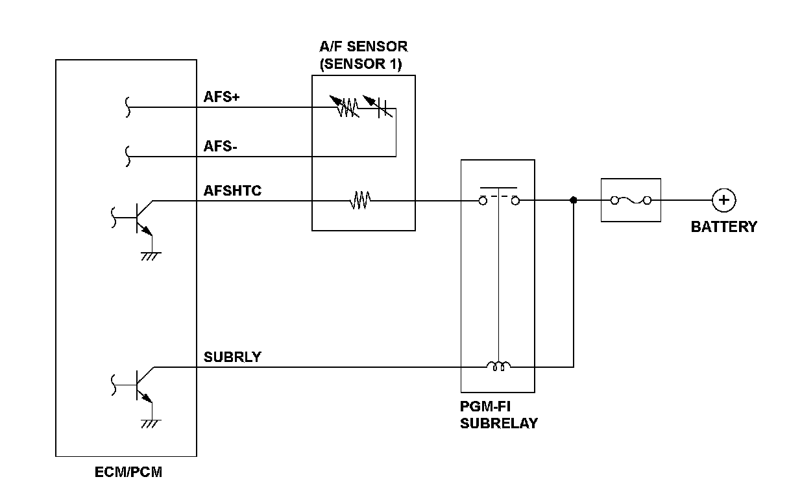
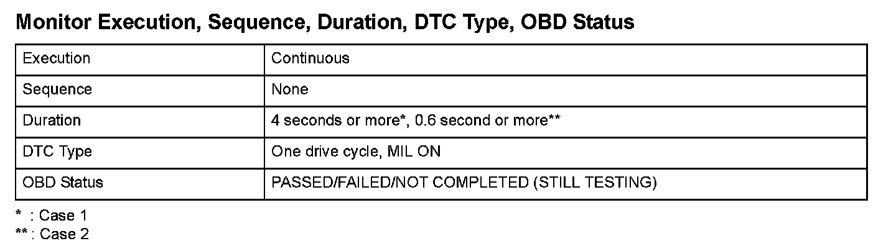
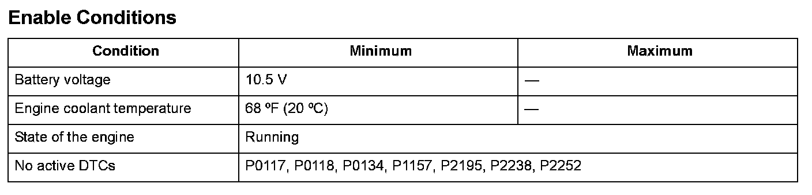

Advanced Diagnostics
DTC P0135: Air/Fuel Ratio (A/F) Sensor (Sensor 1) Heater Circuit Malfunction
General Description
A heater for the sensor element is embedded in the air/fuel ratio (A/F) sensor (sensor 1), and it is controlled by the engine control module (ECM)/powertrain control module (PCM). It is activated and heats the sensor to stabilize and speed up the detection of oxygen content when the exhaust gas temperature is cold.
If the A/F sensor (sensor 1) heater current is not a set value, or the heater is overheated, a malfunction is detected and a DTC is stored.

Monitor Execution, Sequence, Duration, DTC Type, OBD Status

Enable Conditions
Malfunction Threshold
Case 1
The heater current is 0.8 A or less for at least 4 seconds while the heater is activated, and the heater current is 0.8 A or more for at least 4 seconds while the heater is not activated.
Case 2
The heater current is 15.2 A or more for at least 0.6 second.
Driving Pattern
Start the engine. Hold the engine speed at 3,000 rpm without load (in Park or neutral) until the radiator fan comes on, then let it idle.
Diagnosis Details
Conditions for illuminating the MIL
When a malfunction is detected, the MIL comes on and the DTC and the freeze frame data are stored in the ECM/PCM memory.
Conditions for clearing the MIL
The MIL will be cleared if the malfunction does not recur during three consecutive trips in which the diagnostic runs.
The MIL, the DTC, and the freeze frame data can be cleared by using the scan tool Clear command or by disconnecting the battery.